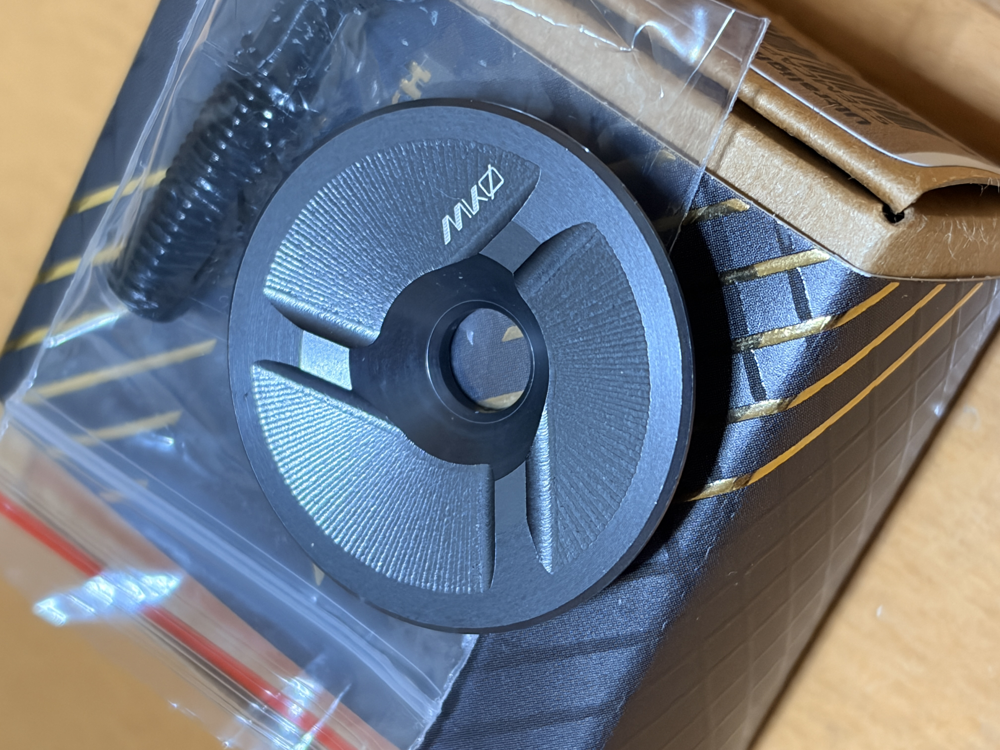
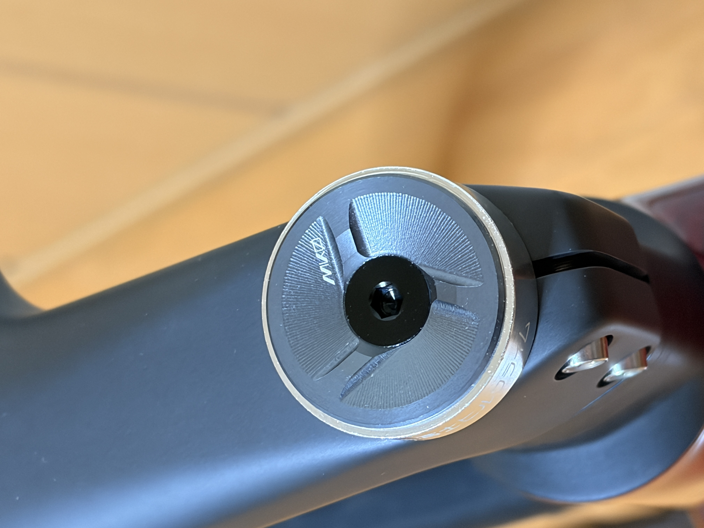
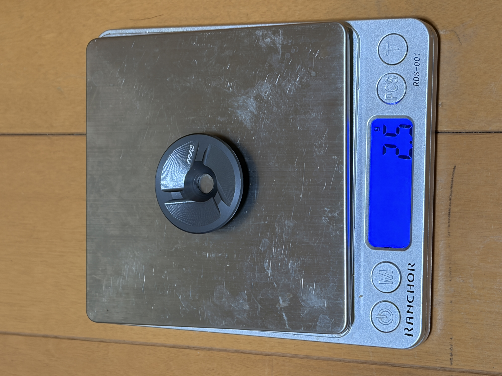
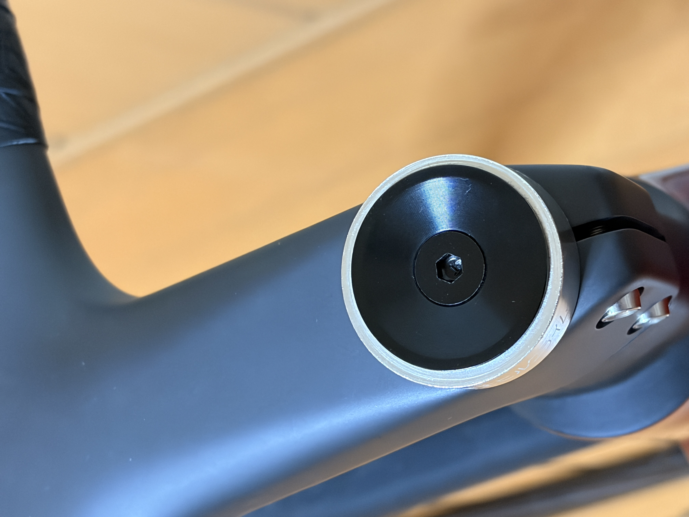
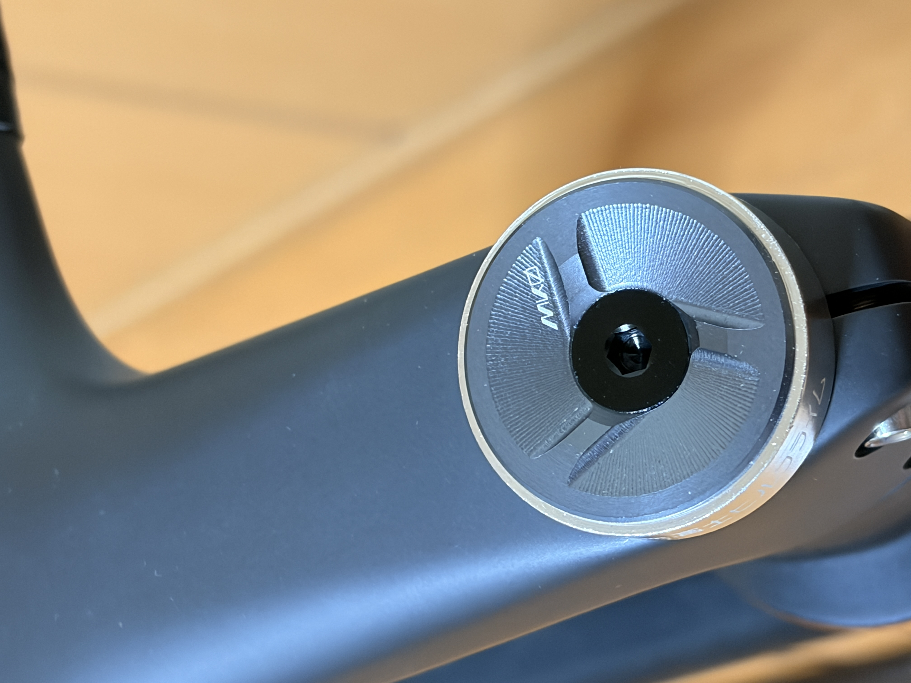
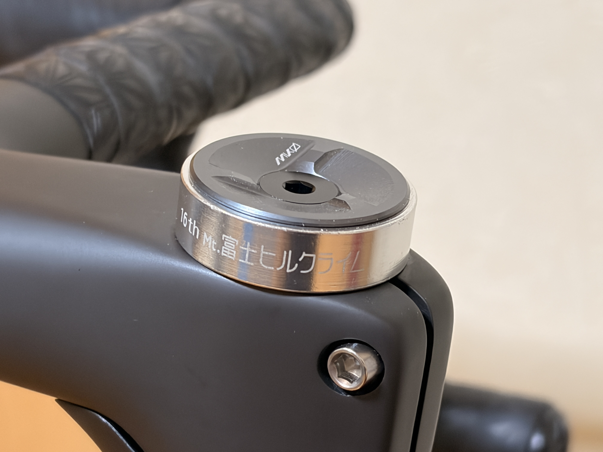
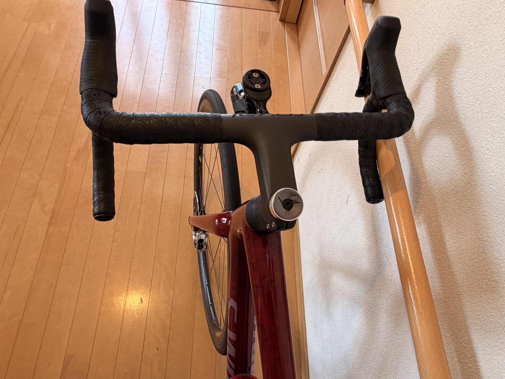

Aethos2のステムキャップをWolfTooth MK0に交換。軽量化はなかったけどカッコいいからヨシ
Aethos2のステムキャップを、WolfTooth MK0 ULTRALIGHT LOW PROFILE STEM CAP に交換した。名前にULTRALIGHTと入っているのだから、さすがに軽くなるだろうと思っていたのだが、交換前に元の重量を調べていなかった時点で、たぶん少し負けている。

全部読むのが面倒な人向けまとめ
- やったことAethos2のステムキャップをWolfTooth MK0に交換
- MK0の実測2.5g
- 元の黒キャップ2.4g
- 軽量化ほぼ無し（むしろ0.1g増、ただし誤差レベル）
- 結論見た目が良いので満足。見た目満足カスタムになった
交換した理由
Aethos2はもともと軽いバイクなので、どうせなら細かいパーツも軽くしたくなる。ステムキャップなんて数gの世界だが、そういう小さいところをつい触りたくなるのが、ロードバイクの少し怖いところである。今回のWolfTooth MK0は、見た目からして薄くて軽そうだったし、削り出しの質感も良く、ロゴも控えめで、Aethos2の落ち着いたコックピットに合いそうに見えた。と、もっともらしい理由を並べてはみたが、何より、アルミ削り出しの見た目が尖っていてカッコいい。最初に刺さったのは、たぶんそこである。
なので買った。そして、重量は調べなかった。軽量化できるだろうという期待だけで買ったわけで、この時点ですでに少し雲行きが怪しい。

実物の見た目はかなり良い
実際に取り付けてみると、見た目はかなり良かった。ステム周りにすっと収まって、いかにも「軽そうな小物を付けました」という雰囲気がある。黒とグレーの切削感もあって、Aethos2の落ち着いたトーンにちゃんと馴染んでいる。アルミの削り出しがとにかくかっこよく、しかも乗っているあいだ自然に目に入る場所の部品なので、ハンドルまわりに視線を落とすたびに少しテンションが上がる。
ステムキャップは小さいパーツだが、乗る前に必ず目に入る場所にある。ここが気に入っていると、走り出す前の気分が少しだけ上がる。軽くなるかどうかとは別の話として、これはこれで大事だと思っている。

買う前に、ひとつだけ注意
ひとつだけ補足しておく。MK0は薄くてスマートな形をしているぶん、付けられるコックピットに少し条件があるらしい。丸いトップキャップを使う一般的な別体ステムや、ROVAL ALPINIST IIのような一体型ハンドルなら問題なく使えるが、ROVAL RAPIDEのように専用のトップキャップ形状を持つエアロ一体型ハンドルには付かないとのこと。買う前に、自分のコックピットがどのタイプか確認しておくと安心だと思う。
重量を測ってみた
取り付け前に、WolfTooth MK0の重量を測ってみた。実測は2.5g。かなり軽い。一般的なキャップ単体では5〜10g前後、ステムキャップ単体で2.5gなら、十分に軽量パーツと言ってよさそうである。ここまではよかった。
問題は、元から付いていた黒いステムキャップも、ついでに測ってしまったことである。

実測では軽量化にはならなかった
元から付いていた黒いステムキャップの実測は2.4gだった。軽い。普通に軽い。つまりWolfTooth MK0に交換しても軽量化にはならず、正確に言えば0.1g増えている。ただ、このくらいの差は秤の誤差や測り方でも変わりそうなので、実質ほぼ同じと見てよさそうだ。
軽量化できるだろうと思って買ったら、元から付いていたものもすでに軽かった。Aethos2、最初からちゃんとしていた。もちろん0.1gで走りが変わるとは思っていないし、もし0.1gで富士ヒルの結果が変わるなら、私はもっと別のところを見直した方がいい。

でもカッコいいからヨシ
今回の交換で、重量面のメリットはほぼなかった。それでも見た目の満足度は高い。ロードバイクのパーツ交換は、軽くなる・速くなる・剛性が上がる、といった分かりやすい効果も大事だが、単純に「カッコいいから気分が上がる」も普通に大事だと思う。特にステムキャップは走る前に必ず目に入る場所なので、そこが気に入っているだけで、少しだけ乗る気になる。
せっかくなので、ビフォーアフターを並べておく。見比べると、印象がどれだけ変わるかが分かりやすい。



結果として、軽量化カスタムのつもりが見た目満足カスタムになった。数字だけ見れば変化はないが、コックピットの雰囲気は少し良くなったし、こういう小さい自己満足も、楽しく自転車に乗るためには意外と大事なのかもしれない。軽量化はできなかった。でもカッコいいからヨシ。今回はそれでいいことにする。
まとめ
Aethos2のステムキャップをWolfTooth MK0 ULTRALIGHT LOW PROFILE STEM CAPに交換した。実測はMK0が2.5g、元の黒キャップが2.4gで、軽量化できると思って買ったものの、元のパーツも十分軽く、重量面のメリットはほぼなかった。ただ、見た目は薄くて収まりがよく、Aethos2のコックピットにもよく合っている。ちなみに価格は4,620円（税込）。ステムキャップ1個としては安くはないが、毎回目に入る場所の満足度を買ったと思えば、まあこんなものだと思う。軽量化にはならなかった、正確には0.1g増えたかもしれない。でもカッコいいからヨシ。

関連記事
 Aethos2つながり
機材とアイテム / 2026.06.17
Aethos2乗りが、富士ヒル目線でSL8と比べてみた
Aethos2つながり
機材とアイテム / 2026.06.17
Aethos2乗りが、富士ヒル目線でSL8と比べてみた
普段ライド用に買ったAethos2を、富士ヒルゴールド目線でTarmac SL8と比べ直した。注ぐTarmac・寄り添うAethos、8%が分かれ目、ホイールの迷いも。結論は「...
 機材の読み直し
旧ブログ発掘 / 2026.06.10
Tarmac SL6を今読み直す。Aethos2で富士ヒルへ行く前に
機材の読み直し
旧ブログ発掘 / 2026.06.10
Tarmac SL6を今読み直す。Aethos2で富士ヒルへ行く前に
2019年の実績と、今のAethos2をつなぐ機材リメイク。昔の機材感覚を今の目線で整理します。
 機材とアイテム
機材とアイテム / 2026.07.01
HR70のバッテリー残量をGarminに表示。Sensor Batteryを使ってみた
機材とアイテム
機材とアイテム / 2026.07.01
HR70のバッテリー残量をGarminに表示。Sensor Batteryを使ってみた
iGPSPORT HR70の残量をGarmin Edge 530に表示するため、Connect IQのSensor Batteryを試した記録。Show Heart Rate設...